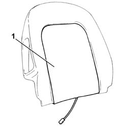

7045M26 L/H OR R/H FRONT SEAT SQUAB HEAT PAD - R+R FOLLOWING ELECTRICAL WIRING CHECK
- Path
- Procedures > 70 FITTINGS > 7045 FRONT SEATS > 7045M FRONT SEAT HANDLING > 7045M26 L/H OR R/H FRONT SEAT SQUAB HEAT PAD - R+R FOLLOWING ELECTRICAL WIRING CHECK
- Kind
- repair procedure (removal / refitting; the operation number is the code)
- Applies to
- all engines; all production periods
- Interactive page
- https://sloeber94.github.io/elrnDB-lThss/en/#/80617
Applies to: all engines; all production periods
 Removing
Removing
 Refitting
RefittingDisconnect the negative battery terminal.
Op. 7045A10 L/H OR R/H FRONT SEAT (ONE) - R+R
Op. 7045J10 SWITCH UNIT FOR MOVEMENT OF ONE FRONT SEAT, L/H OR R/H - R+R FOR CHECK
Op. 7045A42 L/H OR R/H FRONT SEAT GUARD (ONE) - R+R
< R1> [all the elements]
Op. 7045A98 FRONT SEAT REAR POUCH PANEL, LH OR RH - R R
Op. 7045B12 LH OR RH FRONT SEAT HEAD RESTRAINT - R R WITH FRONT SEAT REMOVED
Op. 7045B08 FRONT HEAD RESTRAINT PINS - R R
Op. 7045D31 SQUAB TRIM OF ONE FRONT SEAT LH OR RH RR WITH SEAT REMOVED
1. Detach the heater pad and remove it.

Applies to: all engines; all production periods
Refitting
RemovingCheck that the heater pad is not damaged.
Apply new double-sided tape to the heater pad.
Position the heater pad and secure the adhesive side to the backrest upholstery.
Check that the heater pad is working properly.
Op. 7045D31 SQUAB TRIM OF ONE FRONT SEAT LH OR RH RR WITH SEAT REMOVED
Op. 7045B08 FRONT HEAD RESTRAINT PINS - R R
Op. 7045B12 LH OR RH FRONT SEAT HEAD RESTRAINT - R R WITH FRONT SEAT REMOVED
Op. 7045A98 FRONT SEAT REAR POUCH PANEL, LH OR RH - R R
Op. 7045A42 L/H OR R/H FRONT SEAT GUARD (ONE) - R+R
< R1> [all the elements]
Op. 7045J10 SWITCH UNIT FOR MOVEMENT OF ONE FRONT SEAT, L/H OR R/H - R+R FOR CHECK
Op. 7045J10 SWITCH UNIT FOR MOVEMENT OF ONE FRONT SEAT, L/H OR R/H - R+R FOR CHECK
Connect the negative battery terminal.
Applies to: engines: 2.0 TB, 2.4 20V, 3.0 V6, 3.2 V6, 2.4 JTD 20V; all production periods; only with equipment: Comfort Seats
Op. 7045D31 SQUAB TRIM OF ONE FRONT SEAT LH OR RH RR WITH SEAT REMOVED
Topics linked from this page (7)
- 7045A10 FRONT SEAT (one) left or right - R.R.
- 7045A42 Front seat GUARD (one), left or right - R.R.
- 7045A98 Front seat rear pouch panel, left or right - R.R.
- 7045B08 Front seat head restraint pins - R.R.
- 7045B12 Front seat head restraint - R.R. with seat removed
- 7045D31 SQUAB TRIM OF ONE FRONT SEAT LH OR RH RR WITH SEAT REMOVED
- 7045J10 switch unit for movement of one front seat, l/h or r/h - r+r for check